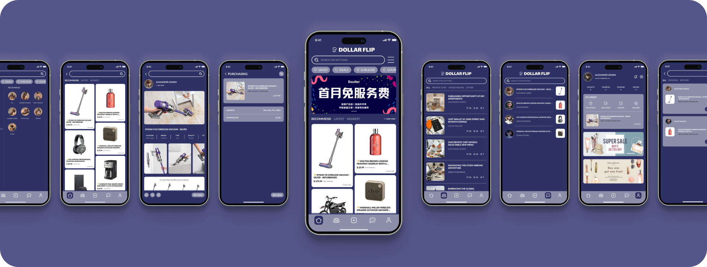

AI-Assisted Enterprise Platform for Predictive Infrastructure Risk Management and Cross-Department Operations

Urban Infrastructure Risk Coordination System (UIRCS) is a production-level enterprise system designed to address climate-induced infrastructure risks in high-density metropolitan environments.
The platform integrates real-time monitoring, AI-driven risk modeling, and structured operational workflows to enable proactive decision-making and coordinated cross-department response.
My role focused on system architecture, permission modeling, workflow orchestration, and AI integration across predictive and execution layers.
In this metropolitan region, infrastructure systems operate across multiple independent departments, including drainage management, power grid operations, and public transportation control. While each unit maintains its own monitoring tools, risk signals remain fragmented and isolated.
During extreme rainfall events, early warning indicators often exist but are not structurally connected. As a result, infrastructure risks escalate before coordinated action can be initiated. Decision-making relies on manual data consolidation, cross-department escalation chains, and reactive operational responses.
The absence of a unified risk intelligence layer and structured coordination workflow limits the city’s ability to move from prediction to prevention.

Urban governance systems typically fall into two structural categories: reporting-oriented platforms and operational management tools.
Reporting systems provide visibility through dashboards and statistical summaries, but lack embedded coordination workflows. Operational tools manage department-specific tasks, yet rarely integrate cross-domain risk modeling or predictive intelligence.
As a result, cities often achieve data transparency without achieving operational synchronization. The gap lies not in monitoring capacity, but in the absence of an integrated risk-to-action system.
During heavy rainfall events, drainage monitoring units detect rising water levels across multiple districts. At the same time, power grid teams observe abnormal load fluctuations near affected substations. However, these signals are processed within separate departmental systems.
Information escalation requires manual reporting, cross-department calls, and layered approvals. By the time coordination is formally initiated, water levels may have already exceeded safe thresholds, increasing the likelihood of cascading failures across transportation and electrical networks.
Structurally, the city’s current response model is reactive and sequential. Monitoring, decision-making, and execution operate in disconnected phases, with limited predictive modeling embedded in the workflow.
To address the structural fragmentation in urban infrastructure management, the system must shift from isolated monitoring tools toward an integrated operational architecture. The objective is not to introduce another reporting layer, but to embed predictive intelligence directly into coordination workflows.
UIRCS establishes a unified risk lifecycle framework that connects detection, recommendation, authorization, and execution. By aligning AI-driven risk modeling with structured cross-department operations, the system enables earlier intervention and controlled, accountable response mechanisms.
1 / Risk Lifecycle Framework
UIRCS is structured around a unified risk lifecycle model that standardizes how infrastructure risks are detected, evaluated, escalated, and resolved across departments.
The lifecycle consists of four phases:
• Signal Detection
• Risk Assessment
• Coordinated Action
• Post-Event Audit
By formalizing this lifecycle, risk management shifts from isolated monitoring to a continuous, closed-loop operational process.
2 / AI Intervention Model
AI operates as an embedded intelligence layer rather than a standalone advisory tool. It continuously aggregates multi-source data to generate dynamic risk scores and predictive trend models.
When predefined thresholds are reached, the system generates structured action playbooks with confidence indicators and projected impact simulations. High-risk decisions remain human-authorized, while predefined low-risk actions may trigger controlled automation under established policy guardrails.
3 / Operational Workflow Architecture
The operational architecture connects predictive intelligence directly to execution workflows. Once a risk event is confirmed, departments are assigned responsibilities through a structured escalation matrix.
Authorization hierarchies define budget approval, resource allocation, and cross-department coordination rights. All actions are recorded through an auditable event log, ensuring accountability and traceability across the response lifecycle.
4 / Layered System Structure
The interface architecture is organized into four operational layers:
• Command Layer – city-wide risk overview and anomaly detection
• Investigation Layer – contextual analysis of individual risk events
• Operations Layer – task orchestration and cross-department coordination
• Executive Layer – strategic simulation and high-level decision support
This layered structure ensures clarity between situational awareness, operational execution, and strategic governance.
UIRCS was defined with a phased implementation strategy to balance system impact and operational feasibility.
The MVP focuses on three core capabilities: unified risk monitoring, structured cross-department workflow orchestration, and role-based command visibility. Guardrail-based automation is introduced only for predefined low-risk actions such as notification triggers and task generation.
Advanced simulation modeling and large-scale automated intervention are reserved for future phases, ensuring controlled system adoption and minimizing operational risk during early deployment.
UIRCS is structured as a role-aware, layered enterprise system that separates situational awareness, investigation, operational coordination, and executive governance.
The information architecture is organized into four primary domains:
Command Layer: Provides city-wide risk overview, anomaly detection, and prioritized incident visibility. This layer functions as the central coordination entry point for all roles.
Investigation Layer: Enables deep analysis of individual risk events, including data sources, impact mapping, confidence levels, and AI-generated recommendations.
Operations Layer: Supports task orchestration, cross-department assignment, approval hierarchies, and status tracking. This layer connects predictive intelligence to executable workflows.
Executive Layer: Offers strategic scenario simulation, resource allocation visibility, and high-level risk impact evaluation for leadership-level decision-making.
This layered structure ensures clarity of responsibility while maintaining cross-layer data continuity.
The interface is designed to reflect the layered system architecture, ensuring clarity between situational awareness, operational coordination, and strategic governance. Each layer supports distinct user roles while maintaining continuity across the risk lifecycle.
Early system prototypes surfaced structural tensions between automation, decision authority, and inter-department coordination. Rather than focusing on interface refinement alone, iteration centered on governance clarity, trust calibration, and operational control.
1 / AI Trust Calibration
Initial feedback revealed hesitation toward AI-generated recommendations due to limited interpretability. The investigation layer was redesigned to surface confidence levels, supporting data references, and projected impact indicators, improving transparency and decision confidence.
2 / Workflow Governance Optimization
Early approval chains created escalation bottlenecks across departments. The authorization matrix was restructured to reduce redundant approval layers while preserving accountability through structured audit logging.
3 / Automation Control Design
Background automation reduced operator awareness of system-triggered actions. Automated tasks were redesigned as visible system events with traceable logs, reinforcing user control perception and operational clarity.
These refinements strengthened the system’s balance between predictive intelligence, institutional accountability, and human oversight.
Designing UIRCS reinforced that enterprise systems are not defined by interface complexity, but by structural clarity. The most critical design challenges emerged not from visual layout decisions, but from modeling governance boundaries, trust mechanisms, and cross-department accountability.
This project emphasized the importance of embedding AI within operational workflows rather than positioning it as an external advisory layer. Predictive intelligence only becomes meaningful when aligned with decision authority, permission structures, and execution pathways.
Ultimately, effective enterprise design requires balancing automation with human oversight, transparency with efficiency, and systemic control with institutional trust.